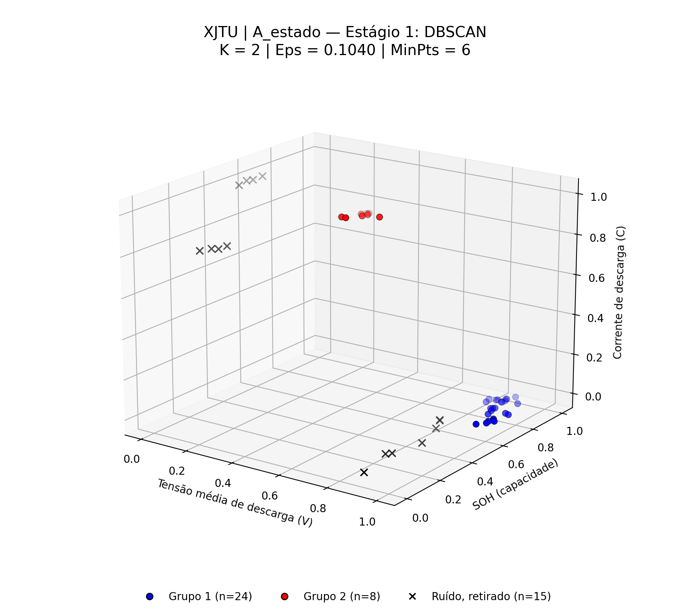
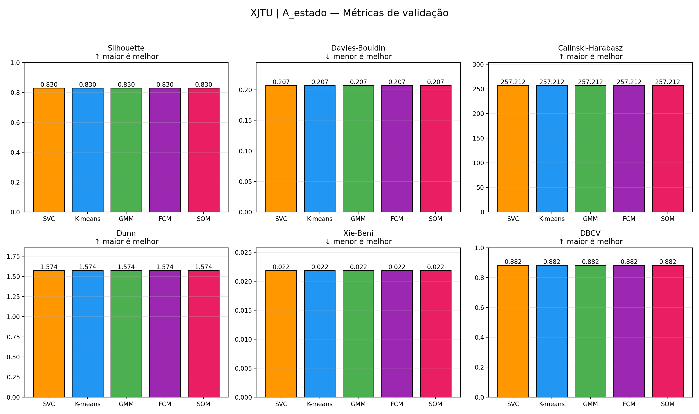
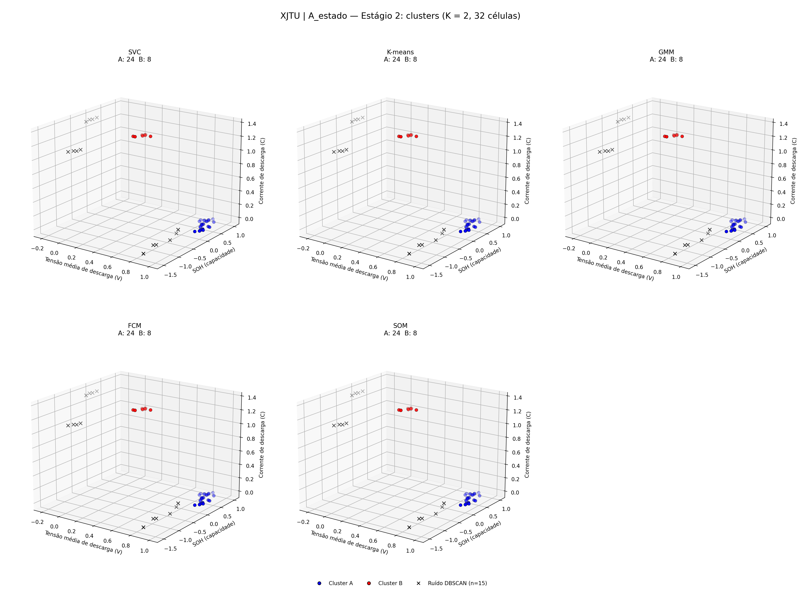
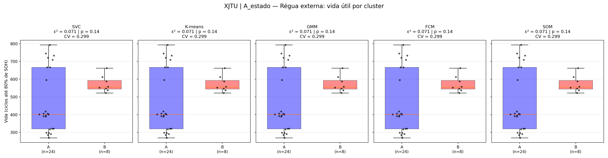
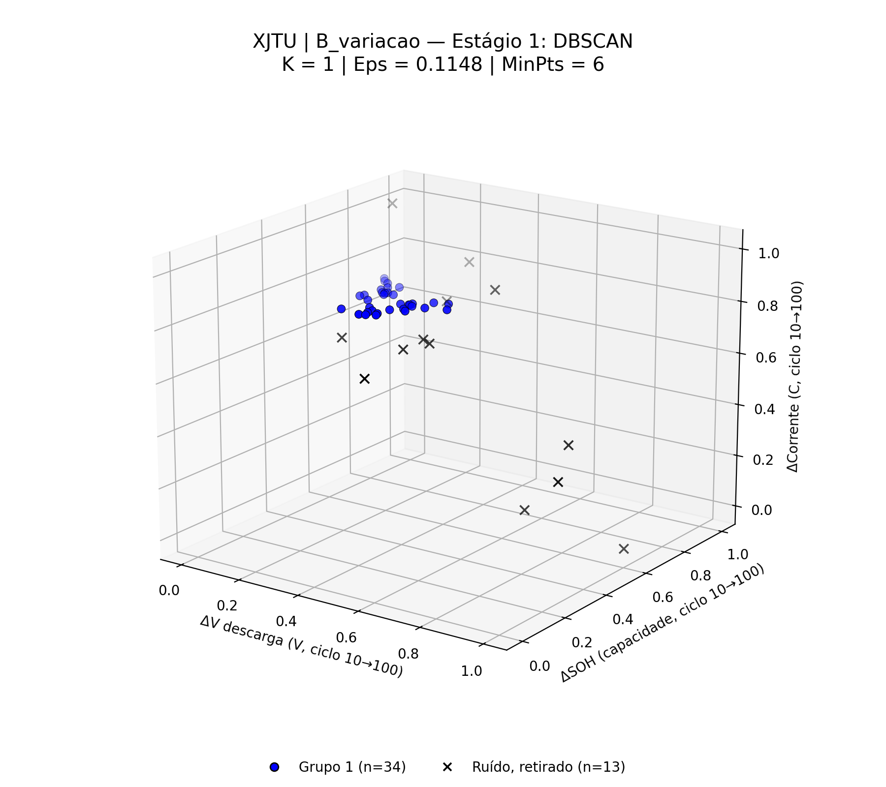

Comparação de conjuntos de features — XJTU (BatteryLife), DBSCAN + 5 algoritmos
A_estado: tensao,cap,corrente · B_variacao: dtensao,dcap,dcorrente
ciclos 6–10 e 96–100 · MinPts = 6 · K = do DBSCAN · régua externa: vida útil (ε² do Kruskal-Wallis e CV)
Resumo
| teste | features | células | ruído | células no estágio 2 | K DBSCAN | K usado | Eps | maior silhueta | maior ε² vida | situação |
|---|---|---|---|---|---|---|---|---|---|---|
| A_estado | tensao, cap, corrente | 47 | 15 | 32 | 2 | 2 | 0.104 | SVC | SVC (0.071) | ok |
| B_variacao | dtensao, dcap, dcorrente | 47 | 13 | – | 1 | 1 | 0.1148 | – | – | K = 1: um grupo só (tente um Eps menor em EPS_MANUAL ou use K_FIXO) |
A_estado: tensao, cap, corrente
células: 47 · ruído: 15 · células no estágio 2: 32 · K DBSCAN: 2 · K usado: 2 · Eps: 0.104 · maior ε² vida: SVC (0.071)
Situação: ok




Tabela de métricas
| Silhouette | Davies-Bouldin | Calinski-Harabasz | Dunn | Xie-Beni | DBCV | ε² vida | p (Kruskal-Wallis) | CV vida | |
|---|---|---|---|---|---|---|---|---|---|
| SVC | 0.83 | 0.2072 | 257.2121 | 1.5736 | 0.0219 | 0.8824 | 0.0707 | 0.1389 | 0.2992 |
| K-means | 0.83 | 0.2072 | 257.2121 | 1.5736 | 0.0219 | 0.8824 | 0.0707 | 0.1389 | 0.2992 |
| GMM | 0.83 | 0.2072 | 257.2121 | 1.5736 | 0.0219 | 0.8824 | 0.0707 | 0.1389 | 0.2992 |
| FCM | 0.83 | 0.2072 | 257.2121 | 1.5736 | 0.0219 | 0.8824 | 0.0707 | 0.1389 | 0.2992 |
| SOM | 0.83 | 0.2072 | 257.2121 | 1.5736 | 0.0219 | 0.8824 | 0.0707 | 0.1389 | 0.2992 |
B_variacao: dtensao, dcap, dcorrente
células: 47 · ruído: 13 · K DBSCAN: 1 · K usado: 1 · Eps: 0.1148
Situação: K = 1: um grupo só (tente um Eps menor em EPS_MANUAL ou use K_FIXO)
